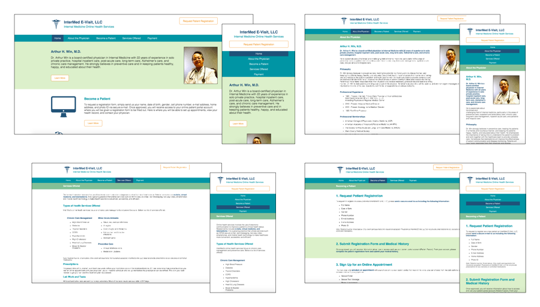

Informational website for physician's virtual clinic
Client: Arthur H. Win, MD, LLC
Target Audience: Patients with Chronic Diseases or Minor Ailments
My Role: Web Designer and Developer
Timeline: Sep - Nov 2015
Following the emerging trend of telemedicine, Dr. Win, an internal medicine physician, planned to start a virtual clinic where he would see patients through video conference call for minor ailments such as colds or chronic disease management. Since I was already a Billing Assistant as his office, I volunteered to design and develop an informational website for this clinic that would also serve a central portal for patients.
My primary goal was to create a website for patients with minor ailments or chronic diseases to learn about Dr. Win’s virtual clinic, schedule a convenient virtual appointment with Dr. Win, access forms, and view their appointments and electronicmedical record.
First I spent a lot of time speaking with Dr. Win and the office manager about their ideas and goals for the website. They primarily wanted a simple informational website for patients to be able to find Dr. Win and learn about his services.
Next, I planned out the organization of the website and key information to focus on. I clarified specific details with Dr. Win and the Office Manager, sketched a few different concepts, and wrote down notes on ways to organize the website.
Before designing the high-fidelity design of the website, I created some wireframes of the general layout for the website. I then designed the high-fidelity version using Sketch. After verifying the final design with Dr. Win and the Office Manager, I programmed the website with HTML and CSS and made it responsive so that patients could view the website easily from any device.
